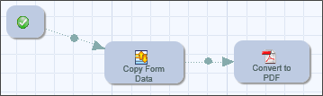
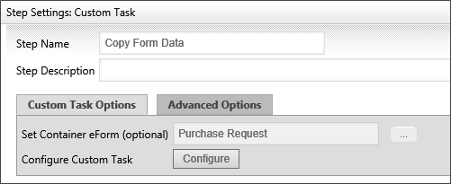
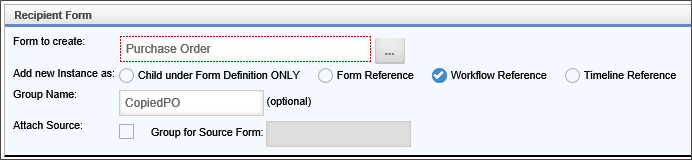
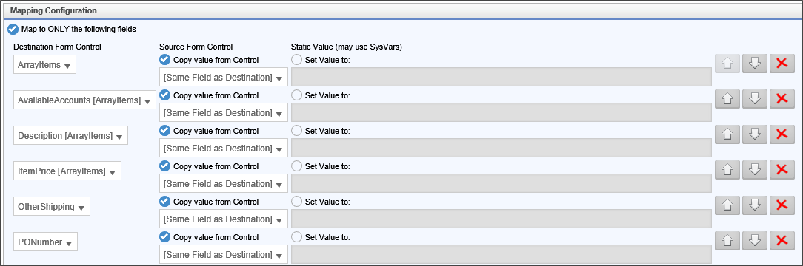
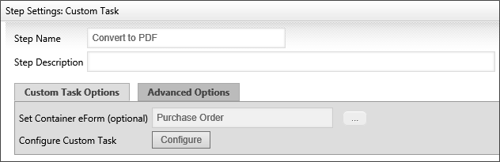
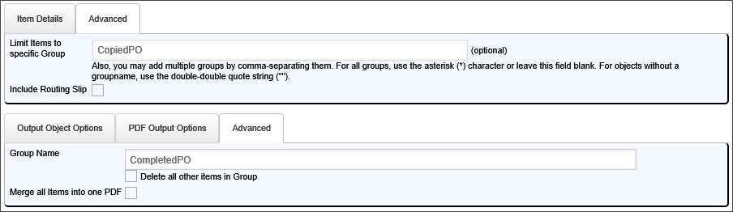

|
|
Lesson Contents | In this Lesson, you will learn how to configure a subprocess to run custom tasks. |
As mentioned previously, subprocess are a convenient way for packaging multiple automated steps into a single Process step on the main Process Timeline. The sample project for this course demonstrates this sort of subprocess. The subprocess used in the sample course copies data between Forms, then converts a Form to PDF format. Let's take a closer look at how this subprocess is configured.
In the PR/PO Process Timeline contained in the Sample Project, the Generate PO activity is a Process Timeline activity that calls a workflow named Generate PO as a subprocess. The Generate PO process converts an approved Purchase Request into a Purchase Order. In addition to offloading the automated process for generating a Purchase Order into a subprocess, the Generate PO process also demonstrates how a Workflow can be used seamlessly as a subprocess for a Process Timeline.

The Generate PO activity is configured to do three important things. First, and most obviously, the Start Process When Activity Begins property identifies the subprocess to run in this step. Second, the Copy objects from sub-process to this Timeline property ensures that all of the objects that are created in the subprocess will, when the process is complete, be attached to this parent timeline, so that the objects are accessible at need. Third, and finally, the Copy objects in Timeline Package to Child Process property ensures that all of the objects in this parent process will be copied to the child process. This final property is very important, since the subprocess needs to copy data from the Purchase Request Form into the Purchase Order Form, and this property ensures that the Purchase Request Form is available in the subprocess so that the copy operation can take place.
The Generate PO process is a Workflow that contains two steps, both of which are Custom Task steps.

The first step runs the Copy Form Data Custom Task, while the second step runs the Convert to PDF Custom Task. If you click on the Settings button for the Workflow, you can see some important configuration settings for this Workflow. First on the Workflow Options tab, the Do not show this object in 'Items I Can Run' Knowledge Views property is checked. Checking this property ensures that this subprocess doesn't appear in the Items I can Run Knowledge View that appears in the default home page workspace for all users. We want to hide this from the users because this process has no purpose if run by itself, and is only run in the context of the parent Process Timeline.
Next, on the Advanced Options tab, the Copy objects in Workflow Package to Parent is checked, while the Only from this group property is set to " CompletedPO". These properties will attach the PO that the process will create to the parent Process Timeline in a group named "CompletedPO" so that we can retrieve it conveniently later in the parent process.
We now have a parent and child process configured to share data between the processes. With that completed, let's look at the individual steps in the Generate PO process.

The Step Settings for the Copy Form Data Custom Task allow us to set a container Form from which we are going to copy the data. In this case, we want to copy data from the Purchase Request Form. Clicking the Configuration button will enable us to select the data we want to copy from the Purchase Request Form to the Purchase Order Form by opening the configuration screen for the Custom Task.
The first section of the configuration screen contains the Recipient Form properties.

The form we wish to create in the copy process is, of course, our Purchase Order Form. We will add the new instance of the Purchase Order Form as a Workflow reference, and we will create a group for this Form called "CopiedPO", so that we can discriminate it from the completed PO that we will convert to PDF and place in the "CompletedPO" group to attach to the parent Process Timeline.
Since we don't have any document attachments to work with, we will skip the Attachments to Copy section, and move straight to the Mapping Configuration section to determine what data to copy between the Forms.
In the Mapping Configuration section, we need to determine what fields to copy between the two Forms.

Select the Map to ONLY the following fields radio button to manually create the fields to cop-e between Forms.
For each field to map between the Forms in the Mapping Configuration section, click the Add Mapping button to add another field to map. One way to make mapping between Form fields easier is to ensure that the field names in both the source and destination Forms are the same, and the Forms in the sample project are configured in this way. Set the Destination Form Control field to the name of a field in the destination Form. Ensure the Copy value from Control radio button is selected, then pick "[Same Field as Destination]" from the field dropdown. Repeat this for every field you'd like to copy. If the field names are not the same in the two Forms, then you must pick the appropriate source field from the field dropdown.
The Copy Form Data Custom Task is now configured, so click the OK button to save the configuration and close the configuration screen.
The PDF custom tasks are used to create PDF files from Forms, and to convert other file types to PDF documents. The following document file types can be converted to PDF:
| DOCUMENT TYPE | FILE EXTENSION |
|---|---|
| Microsoft Word Document | .DOC .DOCX |
| Microsoft PowerPoint Presentation | .PPT .PPTX |
| Microsoft Excel Spreadsheet | .XLS .XLSX |
| Text Files | .TXT .CSV |
| Image Files | .JPG .GIF .PNG |
The most common Custom Task to use for PDF conversion is the Convert To PDF Custom Task. This Custom Task converts Forms and other objects to PDF Documents. In the sample project for this course, the Convert to PDF custom task is used to take the new Purchase Order Form that was created in the Copy Form Data Custom Task and convert it to PDF.

In the Step Settings for the Custom Task, the Container Form property is set to the Purchase Order Form. Click the Configure button to open the configuration screen for the Custom Task.
In the configuration screen there are properties in four tables that must be addressed. On the Item Details tab, select the Workflow References radio button. On the adjacent Advanced tab, set the Limit Items to specific Group property to "CopiedPO", which will limit the PDF conversion to the Form that was previously created in the Copy Form Data Custom Task, which is the only item contained in the "CopiedPO" group.
On the Output Object Options tab, ensure the Workflow radio button is selected, and, in the adjacent Advanced tab, set the Group Name to "CompletedPO". Remember, when we set the properties for the Workflow, we set the "CompletedPO" group objects to be copied back to the parent Process Timeline. Now, we have configured the Custom Task to place the converted PDF file in the "CompletedPO" group so that the group will be populated with the correct object when the group objects are copied back to the parent Process Timeline.

Click the OK button to close the configuration screen and save your changes.
With the configuration properly set, the parent timeline, once a Purchase Request has been approved, will call a subprocess and pass the completed Purchase Request Form to the subprocess. The Subprocess will copy the Purchase Request data to a Purchase Order Form, convert the Form to PDF, then attach the completed PO form back to the Parent Process Timeline as a PDF attachment that can be printed out and sent to a Vendor.